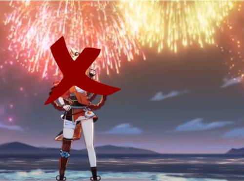

| Some Tips to Prevent Fires From Getting Out of Hand | |
|---|---|
| Do not leave a fire unattended. | |
|
Fire can get out of hand very quickly. So if you must leave to do something else, make sure to turn off the source of the fire like stoves, or to put out your campfires with water or sand. |
| Make sure to always have an adult give a go-signal before you handle a stove, set a campfire, or even light a match. | |
| It’s much better, and much safer, to have an adult give permission or supervise you when you do such actions. They probably know more about fires than you do, so it’s important that they know what you’re going to do with that fire and where you’re going to make it. | |
| Properly dispose of your flammable or other hazardous materials. | |
|
If you use things like gasoline and charcoal, put them in a safe area where they won’t be ignited or react with other chemicals. If you spill some flammable liquid or if you have flammable residue on the floor, clean it up quickly. Preferably after you google how to clean whatever you’re cleaning, because who knows correctly? Better safe than sorry. |
| Keep your area clean and tidy. | |
|
Though it may seem like general advice, it does help in preventing fires. Twisted cables can cause electrical fires, old papers cluttered around can help start a fire or spread it, and piles of trash or clothes are easy places for a fire to grow and become uncontrollable at that point. |
| If possible, do not get fireworks. | |
|  | More often than not, the people who buy them aren’t professionals. Although using fireworks sounds easy to use, lighting them up and running away can be a great hazard to their surroundings. Trees, electrical poles, open windows, and dried branches can all be things that’ll lead to fires erupting. |